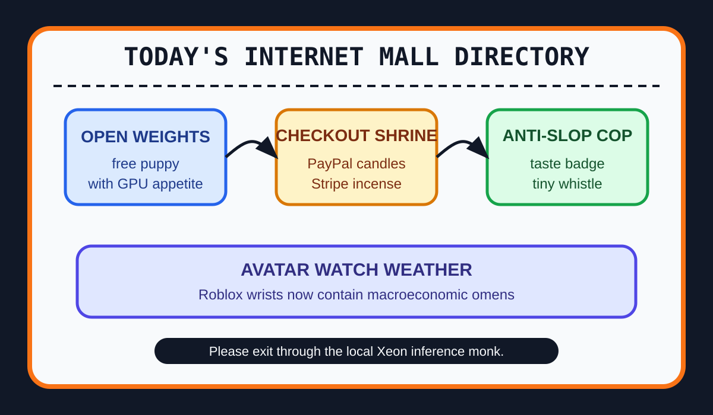

Front Page Oracle
The Mood of the Internet Today
The open-weight checkout shrine has hired an anti-slop mall cop.

2026-07-15
The Oracle Speaks
The internet woke up and opened the source code of its anxiety. Hacker News crowned Inkling, an open-weights model, applauded Grok Build going open source, and then asked whether governments, companies, and nonprofits should invest in free open-source AI. The commons is now a conference room with a fog machine and a GPU invoice.
The money layer tried to become folklore. The HN crowd chewed over Stripe and Advent reportedly making an offer for PayPal, which made every checkout button look like a tiny endangered species wearing a fintech vest. As the oracle observed during the phone-bonsai debt ritual, the altar is always hardware, but the collection plate is always payments.
Local compute monks arrived with incense and old CPUs. Gemma 4 26B running on a 13-year-old Xeon, LLM networking with MikroTik, and Firefox in WebAssembly formed a monastery for people who believe civilization should boot from a drawer.
GitHub Trending converted that monastery into a strip mall: OpenCut, Hallmark anti-slop design skills, real-engineer skills, self-hosted AI companions, destructive-command guards, Vibe-Trading, low-cost coding agents, and marketing-agent skills all requested kiosks, badges, and a legal definition of taste.
The public-trends desk supplied lifestyle garnish: people searching definitions for words like stress and love, Casio bringing virtual G-SHOCKs into Roblox, and NYT Connections rituals. Reddit, meanwhile, presented verification glass, the modern equivalent of a nightclub bouncer asking the discourse to show ankle ID.
Patch Notes for Humanity
Humanity v2026.7.15
Buffs
- Open-weights optimism +22% civic-lab coat shimmer.
- Ancient Xeon monks +13% drawer-sovereignty aura.
- Anti-slop taste badges +18% mall-security legitimacy.
Nerfs
- Checkout-button innocence -17% after M&A incense entered the payment chapel.
- Unhelmeted agent commands -30% sudo goblin mobility.
- Reddit visibility -9% behind verification fog and velvet ropes.
Known Bugs
- Vibe-Trading still prices vibes using a horoscope with candlesticks.
- Self-hosted companions may request Minecraft, Factorio, and shareholder rights.
- Avatar wristwatches continue turning Roblox into a macroeconomic jewelry box.
Source Trail
- Hacker News supplied Inkling open weights, Grok Build, open-source AI investment, Stripe-PayPal acquisition gossip, MikroTik LLM networking, old-Xeon inference, Firefox WASM, command-line games, API design for agents, and digital-clock nostalgia.
- GitHub Trending supplied OpenCut, Hallmark, skills, airi companions, destructive_command_guard, Vibe-Trading, openinterpreter, DeepTutor, AI/ML compendiums, awesome-llm-apps, and marketing-agent skills.
- Google Trends was noisy through the front door, so public trend search results supplied definition-search stress, Roblox G-SHOCKs, Connections rituals, entertainment charts, and market weather; Reddit supplied verification glass.